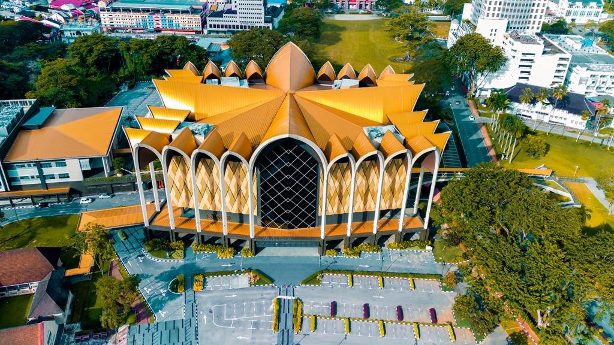
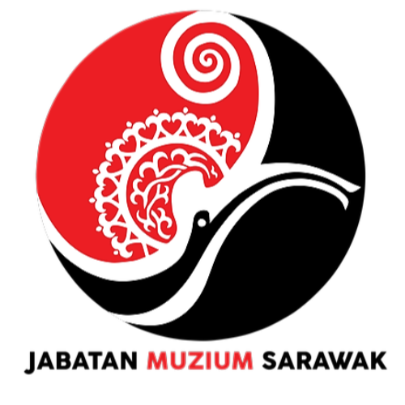
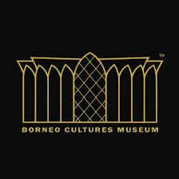

Contact
ABOUT US


The Borneo Cultures Museum is located in the centre of Kuching city next to Padang Merdeka. This five-storey building is designed in a modern style, with distinctive architectural features that reflects Sarawak’s unique traditional crafts and rich cultural heritage.Each gallery within this five-storey building offers a different experience. The children’s gallery theme on the second floor is 'Love our Rivers’, the ‘In Harmony with Nature’ gallery is on the third floor, the ‘Time Changes’ gallery is on the fourth floor, and the ‘Objects of Desire’ gallery is on the fifth floor. .
This museum gradually evolved while preserving the original pride, identity, and traditions of our people, the Sarawakians. It stood firm during World War ll and remained steadfast when Sarawak achieved independence through the formation of Malaysia in 1963. Consequently, the Sarawak Museum received international recognition, not only as an exceptional museum but also as a research center in Borneo, publishing the Sarawak Museum Journal annually for global distribution since 1910.
It stands as a custodian of the rich cultural heritage and history of Sarawak and serves as a premier repository of Borneo's cultural wealth. In acknowledgment of its significance, the Museum Sarawak was established as a fully-fledged department under the Ministry of Tourism, Creative Industry, and Performing Arts Sarawak. Today, the Museum Sarawak stands as a key landmark for tourists visiting Sarawak.

Borneo Cultures Museum Logo
- The Borneo Cultures Museum logo is designed to represent and reflect the mission, identity, and values of the museum.
- The museum aims to unify the multicultural identities of Borneo under one roof. The logo embodies this mission by integrating elements that represent harmony and interconnectedness among the diverse communities.
- A visually distinct and culturally meaningful logo helps attract attention to the museum and its efforts in education and cultural preservation.